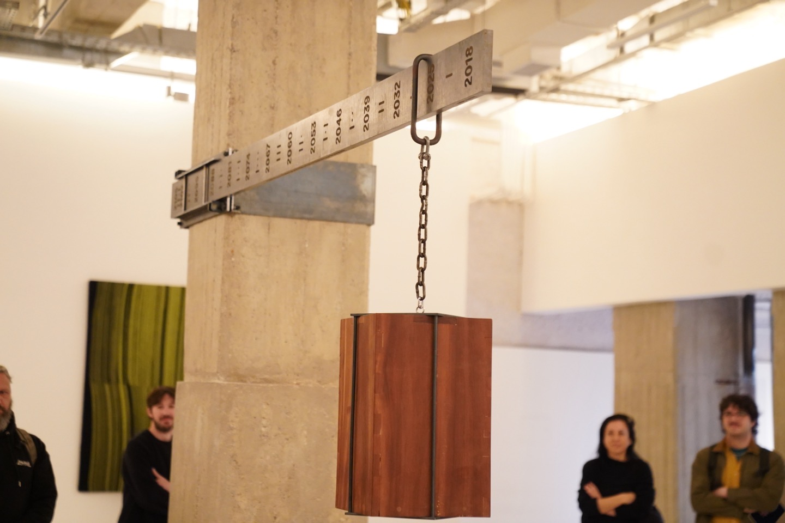

01News, 02las fuentes, 03la visita.
La Fundación Federico Jorge Klemm comienza su custodia pro tempore de Un meteorito para la Sociedad Científica Argentina del año 2105, una obra del dúo de artistas Faivovich & Goldberg con horizonte en el amanecer del siglo XXII.
Cuando la Sociedad Científica Argentina (SCA) vuelva a decidir el destino del meteorito, el 9 de julio de 21052, este acto estará entre sus antecedentes. El 1 de octubre de 2026, en una ceremonia privada en una de las salas de la Fundación y ante pocos testigos, se firmó el primer acuerdo de custodia institucional3 de la obra.
Fundación Klemm is pleased to announce the beginning of its pro tempore custody of Un meteorito para la Sociedad Científica Argentina del año 2105, a work by the artist duo Faivovich & Goldberg with a horizon at the dawn of the twenty-second century.
When the Sociedad Científica Argentina (SCA) once again decides the fate of the meteorite on July 9, 21052, this act will stand among its antecedents. On October 1, 2026, in a private ceremony in one of the Fundación’s galleries, before a limited number of witnesses, the first institutional custody agreement3 for the work was signed.